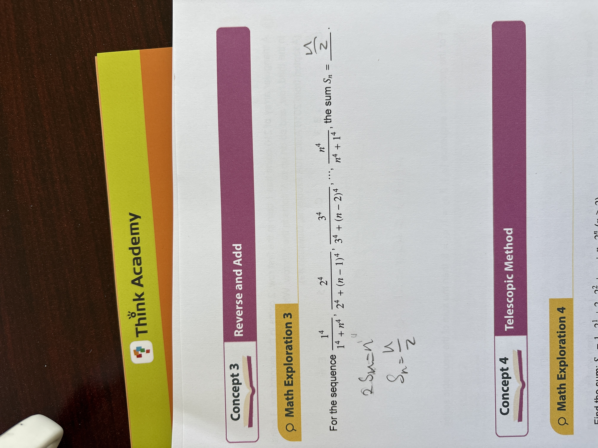

Algebra Foundational Algebra

For the sequence $\frac{1^4}{1^4 + n^4}, \frac{2^4}{2^4 + (n-1)^4}, \frac{3^4}{3^4 + (n-2)^4}, \dots, \frac{n^4}{n^4 + 1^4}$, the sum $S_n = \underline{\quad\quad}$.
\frac{n}{2}
\frac{n}{2}
To find the sum $S_n$, we can use the 'Reverse and Add' method suggested in the concept banner. 1. Identify the terms: There are $n$ terms in this sequence. Let's call the $k$-th term $a_k$. The general form is $a_k = \frac{k^4}{k^4 + (n+1-k)^4}$. 2. Look for pairs: Notice what happens when we add the first term ($a_1$) and the last term ($a_n$): $$a_1 + a_n = \frac{1^4}{1^4 + n^4} + \frac{n^4}{n^4 + 1^4} = \frac{1^4 + n^4}{1^4 + n^4} = 1$$ This pattern works for all pairs. In general, $a_k + a_{n+1-k} = 1$ because the numerators and denominators match perfectly. 3. Calculate the total: If we add the sequence to itself in reverse order, we create $n$ pairs of terms. Since each pair adds up to 1, the total for two copies of the sum is: $$2S_n = 1 + 1 + \dots + 1 \text{ ($n$ times)} = n$$ 4. Solve for $S_n$: Dividing by 2, we get the final result: $$S_n = \frac{n}{2}$$